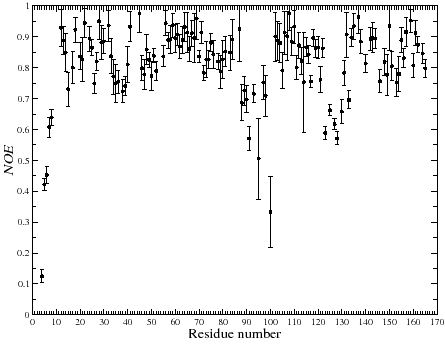

Next: Relaxation curve-fitting Up: Calculating the NOE Previous: The NOE Contents Index
Any two dimensional data set can be plotted in relax in conjunction with the program http://plasma-gate.weizmann.ac.il/Grace/Grace. The program is also known as Xmgrace and was previously known as ACE/gr or Xmgr. The highly flexible relax user function grace.write is capable of producing 2D plots of any x-y data sets. The three commands
grace.write(y_data_type=`ref', file=`ref.agr', force=True)
grace.write(y_data_type=`sat', file=`sat.agr', force=True)
grace.write(y_data_type=`noe', file=`noe.agr', force=True)
create three separate plots of the peak intensity of the reference and saturated spectra as well as the NOE. The x-axis in all three defaults to the residue number. As the x and y-axes can be any parameter the command
grace.write(x_data_type=`ref', y_data_type=`sat', file=`ref_vs_sat.agr', force=True)
would create a plot of the reference verses the saturated intensity with one point per residue. Returning to the sample script three Grace data files are created ref.agr, sat.agr, and noe.agr and placed in the default directory ./grace. These can be visualised by opening the file within Grace. However relax will do that for you with the commands
grace.view(file=`ref.agr')
grace.view(file=`sat.agr')
grace.view(file=`noe.agr')
An example of the output after modifying the axes is shown in figure  .
.
|
 |
Edward d'Auvergne 2009-08-14